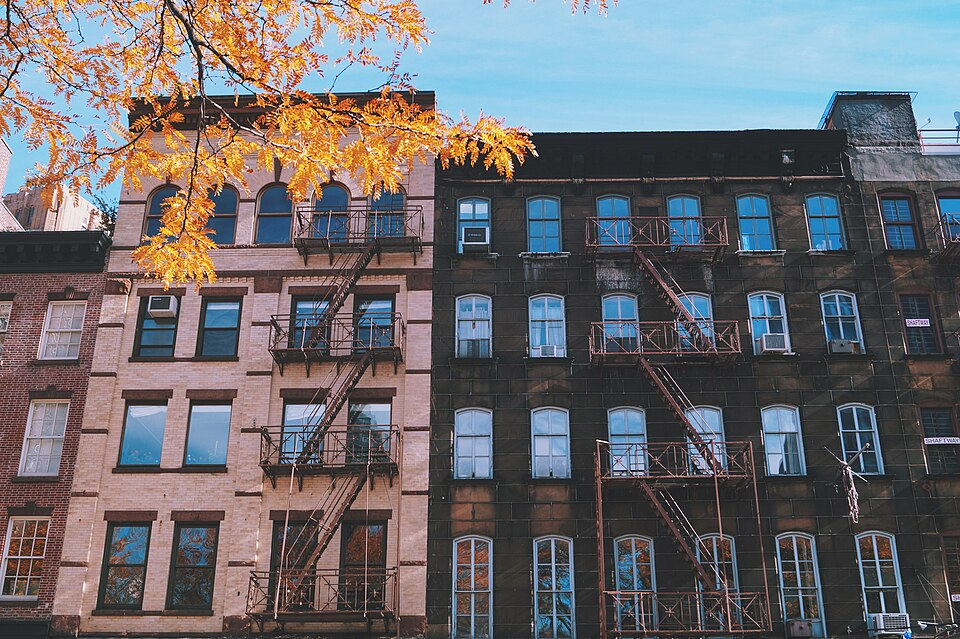
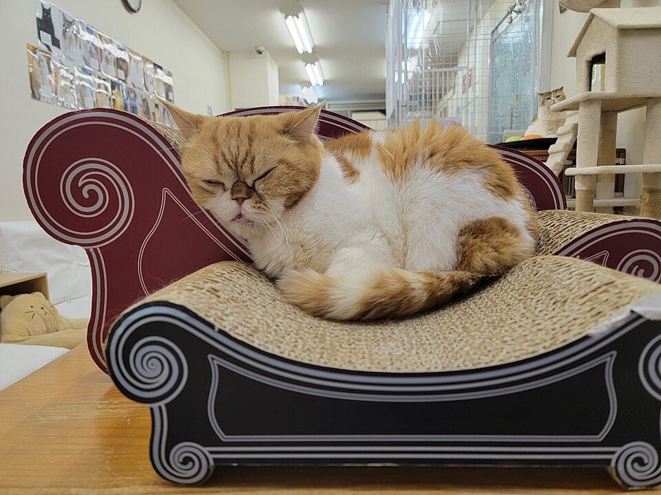
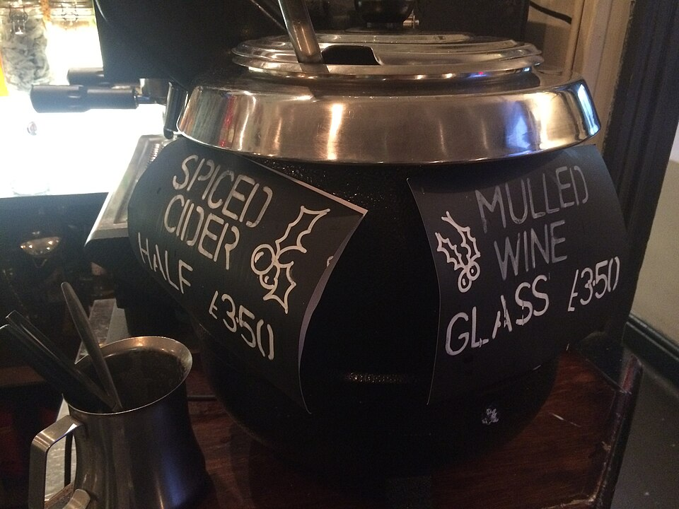

In this adventure we will explore NYC in fall.
Choose where you want to go in NYC in fall.
I want to go to the park and look at the leaves.
I want to stay home and sit on the couch with a blanket and a book.
I want to go to a restaurant with my friends and drink hot apple cider.
All Images were from commons.wikimedia.org under creative commons Liscense.
Cat resting in sofa, by Emma0mb, 13, DEcember 2022. no changes made https://commons.wikimedia.org/wiki/File:Cat_in_sofa_at_Cat_Cafe_Nyankoto.jpg
Fall Foliage Central Park New York City, Bow Bridge, U.S.A. 26 October 2018 by IIP Photo Archive https://commons.wikimedia.org/wiki/File:Fall_Foliage_Central_Park_New_York_City,_Bow_Bridge,_U.S.A.jpg
Fall in New York City by Karla Alexander copykarla 16 January 2017 https://commons.wikimedia.org/wiki/File:Fall_in_New_York_City_(Unsplash).jpg
A British Pub Selling Mulled wine and Mulled Cider by Kyral, 11 December 2015 https://commons.wikimedia.org/wiki/File:British_Mulled_Wine_and_Cider.jpeg